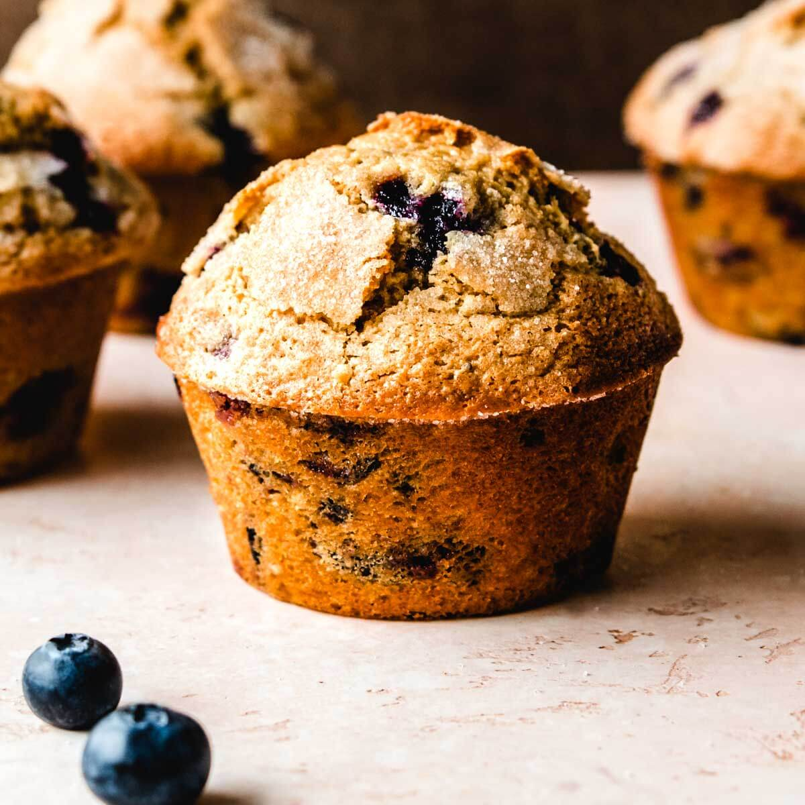

Muffins
Introduction
Muffins are available in both savoury varieties, such as cornmeal and cheese muffins, or sweet varieties such as blueberry, chocolate chip, lemon or banana flavours. They are similar to cupcakes in size and cooking methods, the main difference being that cupcakes tend to be sweet desserts using cake batter and which are often topped with sugar icing.

Ingedients
Prep Time: 10 mins Cook time: 25 mins Total Time: 35mins Servings: 12
- 2 cups all-purpose flour
- 3 teaspoons baking powder
- ½ teaspoon salt
- ¼ cup vegetable oil
- 1 egg
- ¾ white sugar
- 1 cup milk
- chocolate (optional)
Instructions
- Preheat the oven to 200°C. Grease a 12-cup muffin tin or line cups with paper liners.
- Stir flour, baking powder, salt, and sugar together in a large bowl; make a well in the center.
- Beat egg with a fork in a small bowl or 2-cup measuring cup; whisk in milk and oil. Pour egg mixture all at once into flour mixture; mix quickly and lightly with a fork until just moistened. The batter will be lumpy. (Fold in additional ingredients if using; see variations below). Spoon batter into the prepared muffin cups, filling each ¾ full.
- Bake in the preheated oven until tops spring back when lightly pressed, about 25 minutes. After baking, take them out, and enjoy it! (allrecipes)